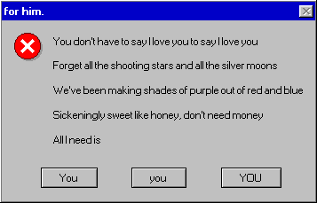
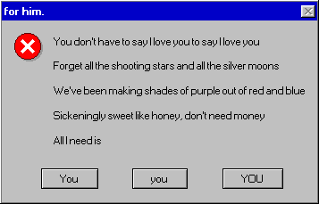
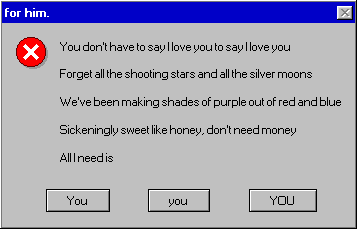
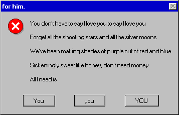

You ran away to find something to say
I went astray to make it okay
And he made it easy,
darlin'
I'm still in love, and I say that because
I know how it seems between you and me
It hasn't been easy,
darlin'
I can't even look at you
Would you look at the space just next to your feet?
The wood is warping
The lines distorting
This house is on fire, woo!
Burning the tears right off my face
What the
hell did we re, woo!
Burning the tears right off my face
What the hell did we do?
Tell me we'll make
it through
'Cause he made it easy, easy
Please, don't leave me, leave me (Easy)
What's left of the dance?
The smell on my hands
The rock in my throat, a hair on my coat
The
stranger at home, my darling
(Like some kind of freak, my darling)
Now I'm vulnerable, so sad and alone
But don't cry for me, 'cause everyone knows
You reap what you sow, my darling
Yeah, yeah, yeah
I can't even look at you
Would you look at the space just next to your feet?
The wood is warping
The lines distorting
This house is on fire, woo!
Burning the tears right off my face
What the
hell did we do?
Tell me we'll make it through